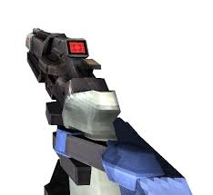

Если Вы считаете, что револьвер - плохое стартовое оружие, то я Вас огорчу. С правильным подходом Вы с пистолетом станете просто машиной для убийств (хотя по сюжету Вы и так ей являетесь, буквально). Всего у револьвера есть три версии: обычный, с монеткой и с раскруткой. Поговорим подробней о каждой.
1. Обычный револьвер
Все револьверы имеют одинаковый темп стрельбы и наносимый урон, но все они отличаются альтернативной атакой. Данный пистолет при зажатии ПКМ заряжается, а при отпускании производит мощный выстрел, который прошивает врагов. Требуется немного времени, чтобы снова выстрелить таким способом (нужно ждать примерно 2-3 секунды).
2. Револьвер с монеткой
Это, пожалуй, самая лучшая модификация оружия во всей игре. При нажатии ПКМ персонаж бросает перед собой монетку, и если выстрелить (и попасть) в неё, то монетка отскочит в самое слабое место противника. Это значит, что мало того, что иногда вы можете ваншотать противников, так ещё и из-за укрытий. Однако если подождать пол секунды после броска, то монетка сверкнёт, и если после этого в неё выстрелить (и опять же попасть), то кроме монетки, отлетевшей в одного врага, в другого врага отлетит Ваша пуля, которая теперь тоже бьёт в уязвимое место противника. Всё это позволяет делать некоторые "приколы". К примеру, если подкинуть монетку и в это время переключиться на обычный револьвер, зарядить тот и выстрелить, то монетка и пуля перенимут всю силу выстрела и попадут опять же в слабое место. Оба. Практика показывает, что после этого обычно не выживают. Также в монетку можно стрелять из следующей модификации револьвера, а также из реилгана (о нём не будет написано на сайте), что обычно отправляет в лобби даже самых сильных противников. Всё это делает эту модификацию одной из самых лучших в игре.
3. Револьвер с раскруткой
Как по-моему, это одна из худших модификаций. При удерживании ПКМ персонаж раскручивает револьвер, а при отпуске кнопки происходит обычный выстрел, который 3-4 раза рикошетит от противников. На первый раз кажется, что это классно и сильно, однако поиграв вы поймёте, что противникам в большинстве случаев от этого ни горячо и ни холодно. Как я говорил ранее, из альтернативной атаки этого револьвера можно выстрелить в подброшенную монетку. Но и тут не всё гладко. По факту да, вы получаете рикошетящую монетку, но урона она наносит почему-то мало, и противникам до сиреневой звезды. Вероятнее всего это оружие не оправдает Ваших ожиданий, но я буду только рад, если я буду ошибаться по этому поводу.